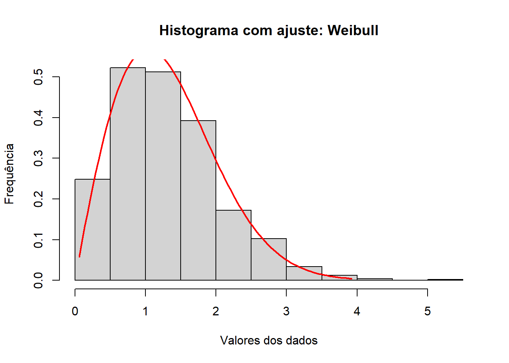
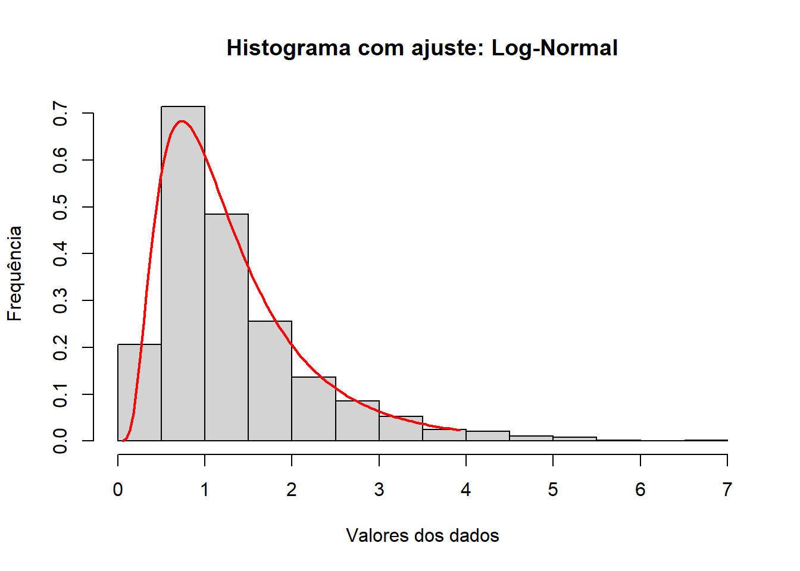
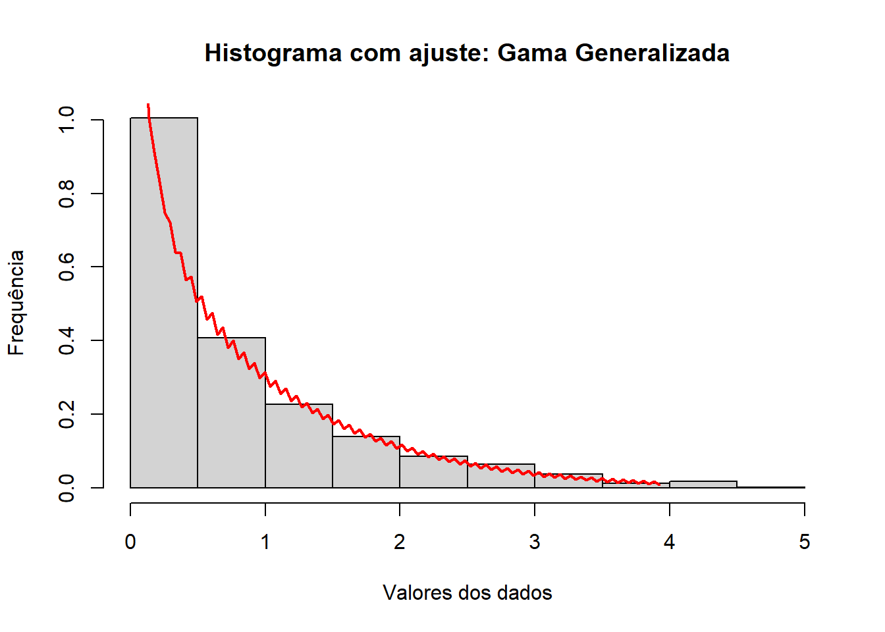

Carregando pacotes exigidos: survivalMétodos Computacionais em Estatítica: Prova Prática
Para cada distribuição, fazer:
- Apresentar as expressões, resultados:
- Função de verossimilhança;
- Log-verossimilhança;
- Vetor Score;
- Matriz Hessiana;
- Criar um código que retorne as estimativas de máxima verossimilhança, feito pelo método de Newton-Rephson ou o Método BFGS da Função \(optim\).
- Compare através de um histograma dos dados como o modelo estimado.
As distribuições dadas:
1. Weibull:
A função densidade é dada por:
\[f(x) = \frac{\gamma}{\alpha^{\gamma}}\cdot x^{(\gamma-1)} \cdot exp\left[-\left(\frac{x}{\alpha}\right)^{\gamma} \right], \ x\geqslant0 \] em que os parâmetros de escala e forma, \(\alpha\) e \(\gamma\) são positivos.
Função de verossimilhança é dada por:
\[ L(\hat{\theta}|x) = \frac{\gamma^{n}}{\alpha^{n \cdot \gamma}}\cdot \prod_{i = 1}^{n} x^{(\gamma-1)} \cdot exp\left[- \sum_{i=1}^{n} \left(\frac{x}{\alpha}\right)^{\gamma}\right]\] Reescrevendo, teremos:
\[ L(\hat{\theta}|x) = \gamma^{n} \cdot \alpha^{(-n \cdot \gamma)} \cdot \prod_{i = 1}^{n} x^{(\gamma-1)} \cdot exp \left[- \sum_{i=1}^{n} \left(\frac{x}{\alpha}\right)^{\gamma} \right]\]
Log-verossimilhança da Weibull:
\[l[L\hat{\theta}] = \log \left[ \gamma^{n} \cdot \alpha^{(-n \cdot \gamma)} \cdot \prod_{i = 1}^{n} x_i^{(\gamma-1)} \cdot exp[- \sum_{i=1}^{n} \left(\frac{x_i}{\alpha}\right)^{\gamma}] \right]\]
logo, temos:
\[= n \cdot \log(\gamma) -n\gamma \cdot \log(\alpha) + (\gamma-1) \sum_{i=1}^{n} \log(x_i) - \sum_{i=1}^{n} \left(\frac{x_i}{\alpha} \right)^{\gamma}\]
Implementando para Weibull:
Para implementar, pegaremos nossa amostra:
# Função Weibull:
# Implementando o método:
theta0 <- c(5,5) # Chute inicial
dif <- 1 #diferença
erro <- 10^(-6) #tolerância
i <- 1 # contador
log_verossimilhanca_weibull <- function(theta, df_x) {
gama <- theta[1]
alpha <- theta[2]
n <- length(df_x)
x <- df_x
l <- n * log(gama) - n * gama * log(alpha) + (gama - 1) * sum(log(x)) - sum((x / alpha)^gama)
return(-l) # Retorna o negativo para minimização
}
# Usar optim com limites para os parâmetros
fit <- optim(par = theta0, fn = log_verossimilhanca_weibull, gr = NULL, method = "L-BFGS-B", hessian = TRUE, df_x = df_x, lower = c(1e-10, 1e-10))
print(fit)$par
[1] 1.959737 1.490362
$value
[1] 1007.194
$counts
function gradient
11 11
$convergence
[1] 0
$message
[1] "CONVERGENCE: REL_REDUCTION_OF_F <= FACTR*EPSMCH"
$hessian
[,1] [,2]
[1,] 480.2817 -285.9996
[2,] -285.9996 1729.0722Optou-se por utilizar o método “L-BFGS-B” (Limited-memory Broyden-Fletcher-Goldfarb-Shanno with box constraints)” que é uma variação do método “BFGS”, possibilitando limites para os parâmetros. Pois foi necessário definir limites para \(\alpha\) e \(\gamma\), uma vez que o algoritmo anterior ficou tentando valores zero ou negativos, causando NaNs na função log-verossimilhança.
Agora, analisando os resultados teremos que:
Os parâmetros estimados para \(\gamma\) (forma) e \(\alpha\) (escala), respectivamente, são: 1.959737, 1.490362;
O ponto que máximo alcançado: 1007.194;
Houve convergencia.
Observemos graficamente o resultado estimado para os parâmetros:
gama_est <- fit$par[1]
alph_est <- fit$par[2]
n <- length(df_x) # tamanho da amostra
x <- rweibull(n, shape=gama_est, scale = alph_est)
x_seq <- seq(min(df_x), max(df_x), length.out = 100)
#length.out: gera uma sequência de 100 valores x igualmente espaçados entre o valor mínimo e o valor máximo dos dados.
densidade_weibull <- dweibull(x_seq, shape = gama_est, scale = alph_est)
hist(x, ylab = "Frequência", xlab = "Valores dos dados", main = "Histograma com ajuste: Weibull", freq = FALSE)
lines(x_seq, densidade_weibull, col = "red", lwd = 2)
2. Log-Normal:
A função densidade é dada por:
\[f(x) = \frac{1}{\sqrt{2\pi}x \cdot \sigma}\cdot exp\left[-\frac{1}{2\sigma^{2}} \cdot \left(\log(x) - \mu\right)^{2} \right], \ x\geqslant0 \] com média \(\mu\) e desvio-padrâo \(\sigma\)
Função de verossimilhança é dada por:
\[ L(\hat{\theta}|x) = \prod_{i=1}^{n}\frac{1}{\sqrt{2\pi}x_i \cdot \sigma}\cdot exp\left[-\frac{1}{2\sigma^{2}} \cdot \left(\log(x_i) - \mu\right)^{2} \right] \] \[ L(\hat{\theta}|x) = \frac{1}{(\sqrt{2\pi})^{n}x_i \cdot \sigma^{n}}\cdot \cdot exp\left[-\frac{1}{2\sigma^{2}} \cdot \sum_{i=1}^{n} \left(\log(x_i) - \mu\right)^{2} \right] \]
Reescrevendo, teremos:
\[ L(\hat{\theta}|x) = (2\pi)^{\left(-\frac{n}{2}\right)}\cdot \sigma^{-n} \cdot \prod_{i=1}^{n} -\frac{1}{x_i} \cdot exp\left[-\frac{1}{2\sigma^{2}} \cdot \sum_{i=1}^{n} \left(\log(x_i) - \mu\right)^{2} \right]\]
Log-verossimilhança da Log-Normal:
\[l[L\hat{\theta}] = \log \left[ (2\pi)^{\left(-\frac{n}{2}\right)}\cdot \sigma^{-n} \cdot \prod_{i=1}^{n} -\frac{1}{x_i} \cdot exp\left[-\frac{1}{2\sigma^{2}} \cdot \sum_{i=1}^{n} \left(\log(x_i) - \mu\right)^{2} \right]\right]\]
logo, temos:
\[= -\frac{n}{2} \cdot \log(2\pi)-n\cdot \log(\sigma) \cdot -\sum_{i=1}^{n} \log(x_i) -\frac{1}{2\sigma^{2}} \cdot \sum_{i=1}^{n}\left( \log(x_i) - \mu\right)^{2}\]
Implementando para a Log-Normal:
log_verossimilhanca_logNorm <- function(theta, df_x) {
mi <- theta[1]
sigma <- theta[2]
n <- length(df_x)
x <- df_x
l <- -n/2 * log(2*pi) - n * log(sigma) - sum(log(x)) - 1/(2*sigma^2) * sum((log(x) - mi)^2)
return(-l) # Retorna o negativo para minimização
}
# Usando optim com limites para os parâmetros
fit <- optim(par = theta0, fn = log_verossimilhanca_logNorm, gr = NULL, method = "L-BFGS-B", hessian = TRUE, df_x = df_x, lower = c(1e-10, 1e-10))
print(fit)$par
[1] 0.1062326 0.6461255
$value
[1] 1088.421
$counts
function gradient
26 26
$convergence
[1] 0
$message
[1] "CONVERGENCE: REL_REDUCTION_OF_F <= FACTR*EPSMCH"
$hessian
[,1] [,2]
[1,] 2.395335e+03 9.760754e-02
[2,] 9.760754e-02 4.790750e+03Agora, analisando os resultados teremos que:
Os parâmetros estimados para \(\mu\) e \(\sigma\), respectivamente, são: 0.1062326 0.6461255;
O ponto que máximo alcançado: 1088.421;
Houve convergencia.
Observemos graficamente o resultado estimado para os parâmetros:
mi_est <- fit$par[1]
sig_est <- fit$par[2]
n <- length(df_x) # tamanho da amostra
x <- rlnorm(n, meanlog = mi_est, sdlog = sig_est) #o máximo dos comprimentos dos argumentos numéricos.
x_seq <- seq(min(df_x), max(df_x), length.out = 100)
densidade_logNorm <- dlnorm(x_seq, m = mi_est, s = sig_est)
hist(x, ylab = "Frequência", xlab = "Valores dos dados", main = "Histograma com ajuste: Log-Normal", freq = FALSE)
lines(x_seq,densidade_logNorm, col = "red", lwd = 2)
3. Gama Generalizada:
A função densidade é dada por:
\[f(x) = \frac{\gamma}{\varGamma{(s)\cdot \alpha ^{\left( s \cdot \gamma\right)}}} \cdot x^{\left( s \cdot \gamma -1\right)} \cdot exp\left[- \left(\frac{x}{\alpha} \right)^{\gamma} \right], \ x\geqslant0 \] com parâmetros de escala \(\alpha\) e \(\gamma\) e \(s\) de forma.
Função de verossimilhança é dada por:
\[ L(\hat{\theta}|x) = \frac{\gamma^{n}}{\varGamma{(s)\cdot \alpha ^{n\left( s \cdot \gamma\right)}}} \cdot \prod_{i=1}^{n} x^{\left( s \cdot \gamma -1\right)} \cdot exp\left[- \sum_{i=1}^{n}\left(\frac{x}{\alpha} \right)^{\gamma} \right], \ x\geqslant0 \]
Log-verossimilhança da Gama Generalizada:
\[l[L\hat{\theta}] = \log \left[ \frac{\gamma^{n}}{\varGamma{(s)\cdot \alpha ^{n\left( s \cdot \gamma\right)}}} \cdot \prod_{i=1}^{n} x^{\left( s \cdot \gamma -1\right)} \cdot exp\left[- \sum_{i=1}^{n}\left(\frac{x}{\alpha} \right)^{\gamma} \right]\right]\]
logo, temos:
\[= n\cdot \log(\gamma) -n(s\gamma)\cdot\log(\alpha) + \log(\varGamma{(s)}) + (s\gamma-1) \cdot \sum_{i=1}^{n}\log(x_i) - \sum_{i=1}^{n} \left( \frac{x_i}{\alpha}\right)^{\gamma}\]
Implementando para a Gama Generalizada:
log_verossimilhanca_gamaGe <- function(theta, df_x) {
alfa <- theta[1]
beta <- theta[2]
s <- theta[3]
x <- df_x
log_lik <- sum(log(s) - log(beta) - log(gamma(alfa)) + (alfa * s - 1) * log(x / beta) - (x / beta)^s)
return(-log_lik) # Retorna o negativo para minimização
}
# Usando optim com limites para os parâmetros
theta0 <- c(1,1,1) # Chute inicial
fit <- optim(par = theta0, fn = log_verossimilhanca_gamaGe, gr = NULL, method = "L-BFGS-B", hessian = TRUE, df_x = df_x, lower = c(1e-10, 1e-10, 1e-10))
print(fit)$par
[1] 1.094547 1.403183 1.856360
$value
[1] 1007.04
$counts
function gradient
19 19
$convergence
[1] 0
$message
[1] "CONVERGENCE: REL_REDUCTION_OF_F <= FACTR*EPSMCH"
$hessian
[,1] [,2] [,3]
[1,] 1443.5190 1322.9634 232.4978
[2,] 1322.9634 1915.7159 -375.9995
[3,] 232.4978 -375.9995 558.7386alfa_es <- fit$par[1]
beta_es <- fit$par[2]
s_es <- fit$par[3]
q <- c(beta_es,s_es)
n <- length(df_x) # tamanho da amostra
x <- rgengamma(n, sigma = alfa_es, Q = q)
x_seq <- seq(min(df_x), max(df_x), length.out = 100)
densidade_gamaGe <- dgengamma(x_seq, sigma = alfa_es, Q = q)
hist(x, ylab = "Frequência", xlab = "Valores dos dados", main = "Histograma com ajuste: Gama Generalizada", freq = FALSE)
lines(x_seq,densidade_gamaGe, col = "red", lwd = 2)
Analisando os resultados, temos:
Os parâmetros estimados para \(\alpha\), \(\gamma\),\(s\) respectivamente, são: 1.094547 1.403183 1.856360;
O ponto máximo foi: 1007.04;
Houve convergência para os parâmetros estimados;